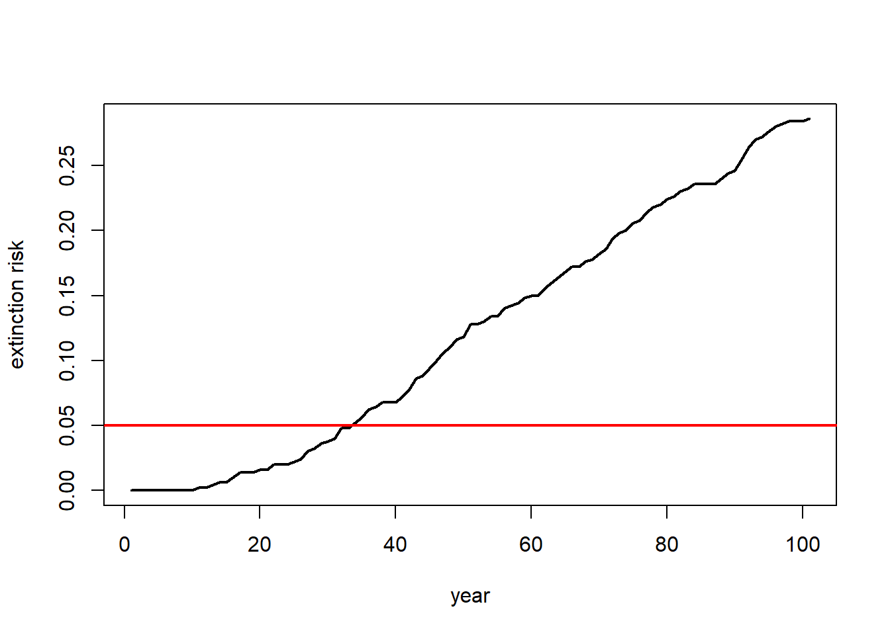
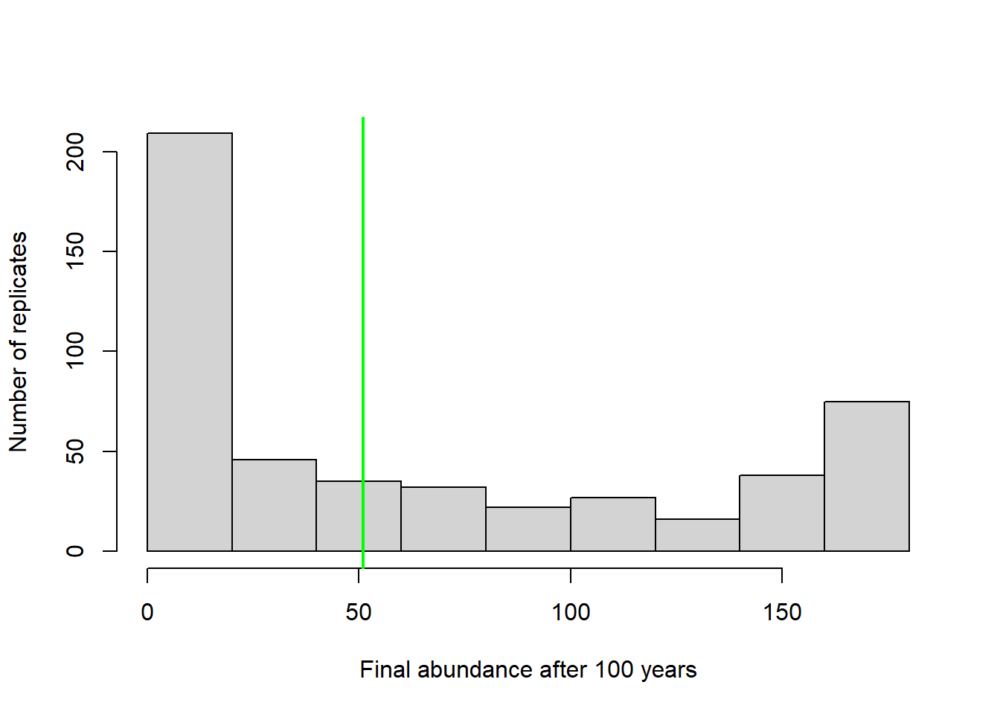

Overview of population Viability Analysis
NRES 470/670
Spring 2023
R code for this lecture can be found here ### Final projects:
Just a heads up about final projects. Your working PVA and a document justifying your modeling decisions is due Wed, April 12!
Population Viability Analysis (PVA)
Population Viability Analysis (PVA) integrates everything we have studied so far and more.
At its most basic level, PVA is the process of building and running a formal predictive population model for the purpose of gaining insight about present and future conservation status, or ranking alternative management options.
PVA is used for assessing how stochasticity and inbreeding can lead to extinction (small-population paradigm) and for assessing how to reverse population declines (declining population paradigm).
Q: Are PVA models always stochastic?
Q: Are PVA models always density-dependent?
Q: Are PVA models always age-structured?
Q: Are PVA models always spatially-explicit?
The PVA process (recipe for PVA!)

The process of building a PVA model is iterative.
For example – after running your model (step 4) and looking at your results (step 5) you might realize that the model is totally unrealistic. This might prompt you to go back and change your conceptual model of the life history (step 1), and re-parameterize your model (step 2).
Step 1: Conceptualize life history processes
Lecture 3: exponential growth
Lecture 4: density dependence
Lecture 5: Allee effects
Lecture 6: age structured populations
Lecture 7: matrix population models
Lecture 8: stochasticity
(and labs 1,2,3,4,5)
The first step is to conceptualize the life history for your species of interest. This is where you might put together a life history diagram, and think about the following questions:
- How many life stages should I include?
- Which life stages are reproductive?
- Which vital rate(s) are density-dependent?
- Does your species benefit from social aggregation? If so, are there potential Allee effects?
- Which vital rates vary from year to year (environmental stochasticity)?
- How might your proposed scenarios (e.g., management activities) change key vital rates?
- Are there any catastrophes that can affect the system?
Q: is there ever a case where you WON’T include demographic stochasticity in your model?
Step 2: Parameterize the demographic model!
Lecture 3: exponential growth
Lecture 4: density dependence
Lecture 5: Allee effect (if
applicable)
Lecture 6+7: age structure and matrix population models
Lecture 8: stochasticity and
uncertainty
(and Labs 1,2,3,4,5)
This is where you attach real numbers to the stocks and flows in your conceptual life history diagram. Remember that these parameters are more than just survival and fecundity. It’s also:
- Annual variation in survival and fecundity (environmental
stochasticity)
- Initial abundances
- Density dependence functions and parameters (including K)
- Allee threshold (if applicable)
- Catastrophe effect sizes and probabilities
- Effects of management actions
- And more…
[stone soup analogy to model parameterization!]
Step 3: Spatial structure!
Most of your projects will probably not include spatial structure. This is the topic for lectures in the next couple weeks (and lab 6)!
Lecture 13: metapopulation models
Lecture 14: source-sink dynamics
Lab 6: metapopulation models
If you want to ask spatial questions, your model needs to be spatially explicit, or at least consider spatial structure in some way. The kinds of questions you might think about include:
- How many discrete populations are there in your
metapopulation?
- Do different populations have different mean vital rates? Are some
populations likely to be sources and others likely to be sinks?
- Is environmental stochasticity spatially correlated? (is a bad year in one subpopulation likely to be a bad year in every subpopulation?)
- At what rate do individuals move among these populations?
- Can connectivity be enhanced via habitat management?
- Are dispersal rates density-dependent?
Step 4: Simulate!
Lecture 1: systems thinking
Lecture 2: feedbacks
(In-class InsightMaker exercises, all labs)
You all know how to simulate populations now!
Be creative and use common sense- set up the simulations so that they can help you answer your key research questions!
- What scenarios do you want to test?
- How many replicates are sufficient?
- What simulation results do you need to record for making plots and running analyses?
Step 5: Results
I recommend using R or Excel to analyze your results and make plots to illustrate the results of your scenario tests.
InsightMaker plots (abundance over time) are great (and can be included in presentations and reports). However, this is often not the best way to visualize and summarize key differences among your simulation scenarios!
Overall, you need to make sense of all the simulations you just ran and present your results in ways that make sense to your readers!
There are two types of data analysis tools that you will need to be able to use the simulation results to answer your questions: graphical visualization and statistical analysis.
These tools- visualization and statistical analysis - are diverse, and there is no one-size-fits-all way that you should visualize and analyze your simulation results. It really depends on your question!! I will give you some ideas here about graphical representations in the demo PVA below - but just remember you are not limited to these ideas- be creative!
Since this class is not a statistics class, I don’t necessarily expect you to do sophisticated stats as part of your project- but your TAs and I can work with your groups individually to figure out some simple statistical analyses that make sense for your project. Learning to use statistics will definitely come in handy in the future!
A Simple Demonstration PVA
To illustrate some of these concepts, let’s build and run a simple PVA in R. If you want to follow along, click here
Step 1: conceptualize the life history
For simplicity, let’s ignore age structure for now - this is just a simple stochastic, one-stage (scalar) population model!
Also let’s ignore parameter uncertainty too!
Step 2: parameterize!
Here is the basic model parameterization:
# Demonstration PVA ---------------------------------
# STEP 1: conceptualize life history (we are modeling this population as a simple, single-stage stochastic model with density dependence)
# STEP 2: parameterize the model ---------------------------------
# Basic life history parameters
R_max <- 1.15 # Maximum rate of growth
Init_N <- 51 # Initial abundance (not stage structured)
K <- 175 # Carrying capacity
# Environmental stochasticity ------------------------------------
SD_anngrowth <- 0.11 # standard deviation of annual growth rate
# Density-dependence (Ricker model) ----------------------------------
Ricker <- function(prev_abund){ # this is a function for computing next-year abundance -- includes env stochasticity
prev_abund * exp(log(rnorm(1,R_max,SD_anngrowth))*(1-(prev_abund/K)))
}
# Catastrophe -------------------------
Flood_prob <- 0.05 # 5% chance of major flood
Flood_lambda <- 0.25 # 25% of population can survive a flood Step 3: spatial structure
Let’s ignore spatial structure! We will learn more about modeling spatial structure in the next two lectures!
Step 4: simulate!
Now we can use these parameters to build and run a simple PVA model:
# STEP 3: add spatial structure (not applicable here)
# STEP 4: simulate! -------------------------------
# Basic simulation parameters
nyears <- 100 # number of years
nreps <- 500 # number of replicates
PVAdemo <- function(nreps,nyears,Init_N,R_max,K,Flood_prob,Flood_lambda){
#browser()
PopArray2 <- array(0,dim=c((nyears+1),nreps)) # set up storage array
## start looping through replicates
for(rep in 1:nreps){
# set initial abundance
PopArray2[1,rep] <- Init_N # set the initial abundance
### loop through years
for(y in 2:(nyears+1)){
### stochasticity and d-d
nextyear <- max(0,trunc(Ricker(PopArray2[y-1,rep])))
### catastrophe
if(runif(1)<Flood_prob) nextyear <- nextyear*Flood_lambda
PopArray2[y,rep] <- nextyear
}
}
return(PopArray2)
}
### Run the PVA! -------------------
Default <- PVAdemo(nreps,nyears,Init_N,R_max,K,Flood_prob,Flood_lambda)Step 5: results!
Now we can perform graphical visualizations and statistics that answer our original questions!
Graphical visualization
There are several types of visualizations that you might want to use for your PVA models:
The first is to look at the “cloud” of abundance trajectories. This is the same type of figure we have seen in InsightMaker using the “Sensitivity testing” tool.
# STEP 5: results -------------------------
# Graphical visualization
PlotCloud <- function(simdata){
plot(c(1:101),simdata[,1],col=gray(0.7),type="l",ylim=c(0,max(simdata)),xlab="Years",ylab="Abundance")
for(r in 2:ncol(simdata)){
lines(c(1:101),simdata[,r],col=gray(0.7),type="l")
}
}
PlotCloud(Default)
Okay, what do we learn from this?
If our question is about extinction risk, maybe we want to plot extinction risk by time…
# Visualize extinction rates over time
Extinction_byyear <- function(simdata){
apply(simdata,1,function(t) length(which(t==0)))/ncol(simdata)
}
plot(c(1:101),Extinction_byyear(Default),type="l",lwd=2,xlab="year",ylab="extinction risk")
abline(h=0.05,col="red",lwd=2)
Maybe our question is about the probability of decline over 100 years …
In that case maybe we should present a histogram of final abundances…
# visualize final abundance after 100 years relative to initial abundance
hist(Default[nrow(Default),],xlab="Final abundance after 100 years",ylab="Number of replicates",main="")
abline(v=Init_N,col="green",lwd=2)
Or we could plot the extent of decline vs the probability of falling below that threshold at year 100.
# plot probabilities of different severities of decline
declines <- seq(0,100,by=1)
declineprob <- numeric(length(declines))
for(s in 1:length(declines)){
declineprob[s] <- length(which(Default[nrow(Default),]<(Init_N-(declines[s]/100)*Init_N)))/ncol(Default)
}
plot(declines,declineprob,type="l",lwd=2,xlab="Decline threshold (percent)",ylab="Probability of falling below threshold")
abline(v=25,col="red",lwd=2)
What if our question is about the effect of flooding on extinction risk. Let’s imagine that the probability of flooding is not expected to change with climate change, but that the intensity of the flood damage is likely to increase substantially!
Currently, floods generally result in a 25% population reduction. But climate change could increase this number to as much as 90%. Let’s look at how much this could increase extinction risk!
# Plot extinction risk as a function of flood severity
Exctinction_risk <- function(simdata){
length(which(simdata[nrow(simdata),]==0))/ncol(simdata)
}
flood_lambdas <- seq(0.9,0.1,by=-0.05)
all_scenarios <- numeric(length(flood_lambdas))
for(scenario in 1:length(flood_lambdas)){
PVA <- PVAdemo(nreps,nyears,Init_N,R_max,K,Flood_prob,flood_lambdas[scenario])
all_scenarios[scenario] <- Exctinction_risk(PVA)
}
plot(1-flood_lambdas,all_scenarios,type="p",cex=2,xlab="flood impact (mortality in flood year)",ylab="extinction risk")
abline(h=0.05,col="red",lwd=2)